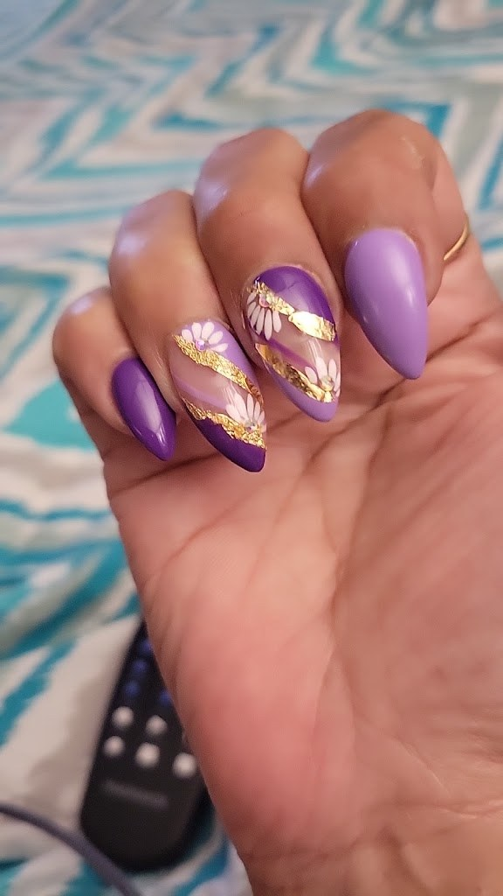
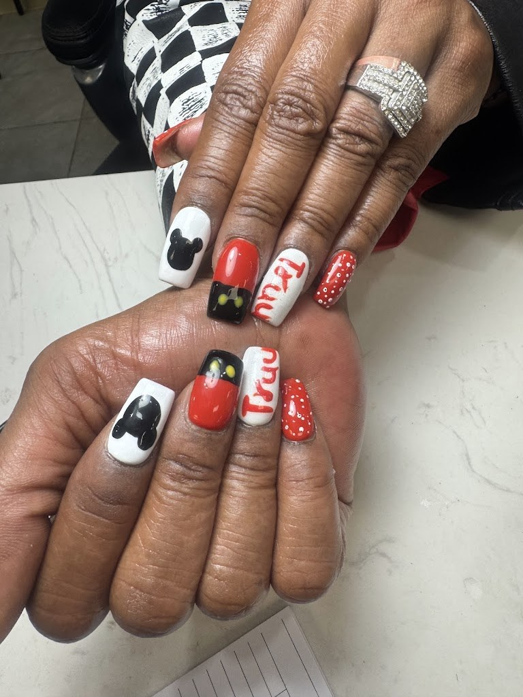
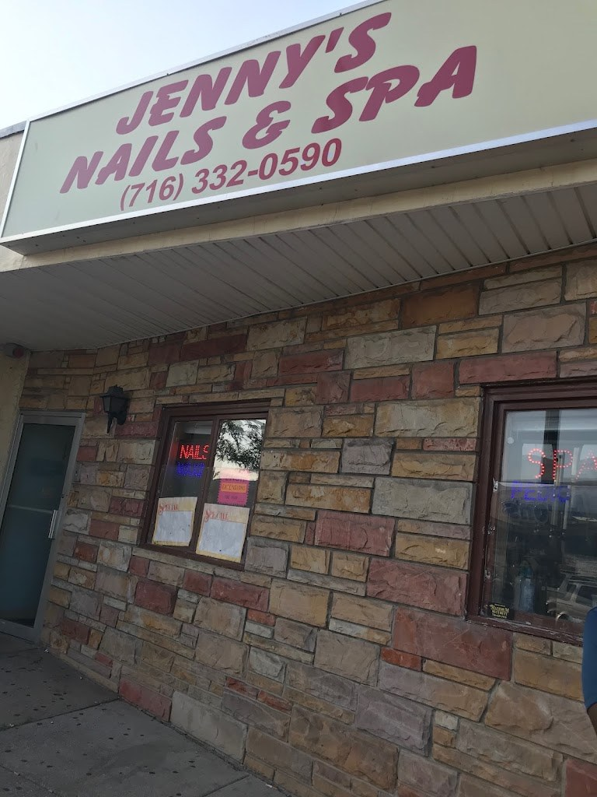

Nail Salon, Buffalo NY
Jenny's Nails and Spa
Manicures, pedicures, Shellac and gel polish, acrylic extensions, and lash extensions in Buffalo since 2007.
In business since 2007. Walk-ins accepted.

About
Jenny's Nails and Spa is a nail salon at 314 W Ferry St in Buffalo, New York, in business since 2007. Services include manicures, pedicures, including deluxe pedicure, Shellac and gel polish, acrylic extensions, dip powder, pink powder, and lash extensions. Walk-ins are accepted, credit cards are accepted, and gift certificates are available. Hours are Monday through Saturday, 9:00 AM to 6:30 PM, Sunday closed. Call (716) 322-0590 to book an appointment.
Walk-ins and gift certificates
Walk-ins are accepted and gift certificates are available. Find the salon on Facebook at Jenny's Nails and Spa. Call (716) 322-0590 to book an appointment.
Nail and spa services
Manicures
Manicures.
Pedicures
Pedicures, including deluxe pedicure.
Shellac and gel polish
Shellac and gel polish.
Acrylic extensions
Acrylic extensions.
Dip powder
Dip powder.
Pink powder
Pink powder.
Lash extensions
Lash extensions.
Gift certificates
Gift certificates are available.
Gallery


All three photos are real photos from the business's Google Maps listing. They show a hand with long purple nails with gold foil and white daisy accents, two hands with red, white, and black Mickey Mouse nail art, and the storefront sign reading Jenny's NAILS and SPA above a brick facade.
Visit
Address: 314 W Ferry St, Buffalo, NY 14213
Hours: Monday through Saturday, 9:00 AM to 6:30 PM; Sunday closed.
Phone: (716) 322-0590
Contact
Jenny's Nails and Spa serves Buffalo, NY. Questions? Call (716) 322-0590.